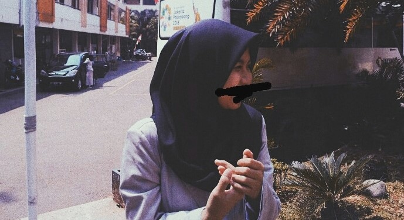
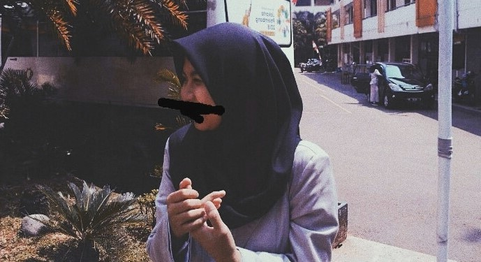

KENALAN YUK!
 Nama Lengkap : Sherlita Fadilah
Nama Panggilan : Lita
Tempat/Tanggal Lahir : Bogor/31 Desember 2001
Alamat : Jl. Katulampa rt04/19
Sekolah : SMK-SMAK Bogor
Kelas : XI-I
Hobbi : Menggambar, Olahraga (Voli)
Cita-Cita : Analis bidang perminyakan
TENTANG SAYA
Lahir sebagai anak ke-3 dari 3 bersaudara a.k.a bungsu di Rs. Ciawi dengan bobot 3,3kg pukul 09.35 wib alhamdulillah tanpa cacat sedikitpun. Dengan catatan pipi sudah seperti yang anda lihat sekarang. Sangatt menyukai Harry Potter especially Harry Potter and The Prisoner Of Azkaban. Juga suka sekali dengan apapun yang berkesan vintage atau retro, suka warna kuning, hijau, hitam, putih dan abu-abu. Suatu kesenangan juga bagi saya mengikuti sebuah organisai, berbagi pendapat dan merencanakan sesuatu memiliki daya tarik tersendiri bagi saya.Terlahir di akhir bulan desember menjadikan saya dibawah naungan Capricorn yang 'katanya' memiliki bakat kepemimpinan, tentang yang satu itu cukup benar adanya bagi saya. Hal lain yang menarik bagi saya adalah segala sesuatu yang berbau seni, lebih tepatnya menggambar. Mengekspesikan apa yang saya lihat atau apa yang saya inginkan lewat gambar memiliki daya tarik tersendiri bagi saya, juga saya mulai menyukai membuat sajak-sajak singkat tentang apa saja yang saya pikirkan.
Wanna know more? check this one!
follow me on instagram : sherlitaf